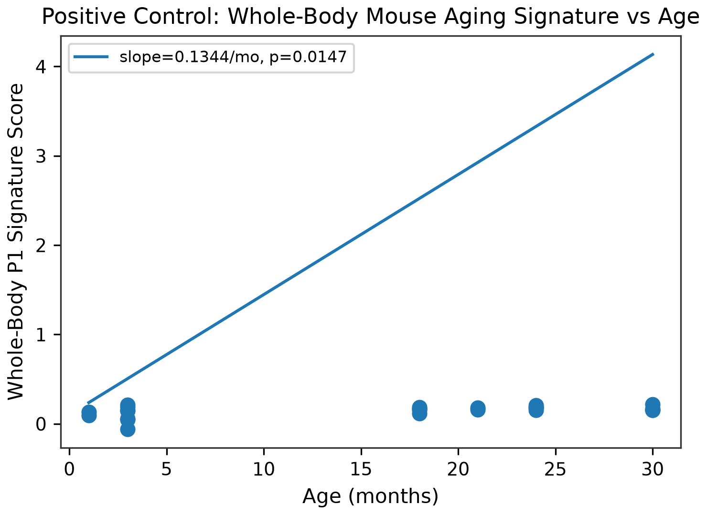
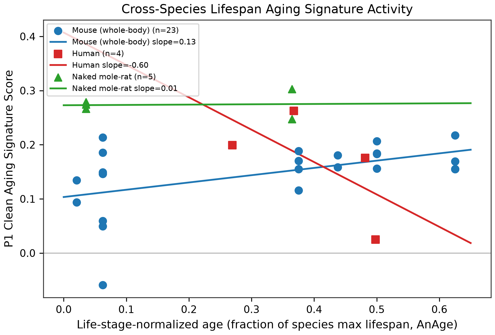
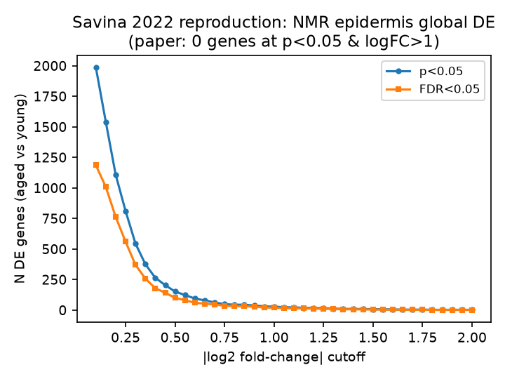

Where aging shows up cell by cell, and where it doesn't.
Agescape is an interactive exploration of mammalian aging at single-cell resolution: where aging signal is statistically real, which genes change with age, and whether the pattern holds from mouse to human to the naked mole-rat.
Of 163 tissue-cell-type units tested, aging is powered in 17, all in lung and kidney.
Aging signal is powered in only 2 of 16 tissues
Of 163 tissue by cell-type units evaluated, 17 met the pre-registered mouse eligibility floor of at least 3 mice and at least 50 cells per group for the 3 month vs 18 month contrast. All 17 are in Lung or Kidney. The other 146 units, spread across the other 14 tissues, did not meet the floor, so this atlas cannot support an aging call for them.
Source: G0 Atlas Eligibility Map
Lung adventitial cells and kidney tubule cells exhibit strongest aging signals
Differentially expressed genes (FDR < 0.05) with 95% bootstrap confidence intervals. Rank 1: Lung::adventitial cell (55 DE genes); Rank 2: Kidney::kidney proximal convoluted tubule epithelial cell (53 DE genes). Tap any bar to inspect unit details.
Source: G1 Ranked Aging Signals
Top signal is 12x its permutation null, and pipeline agrees with original paper.
Pipeline reproduces original Tabula Muris Senis aging slopes across 13,019 shared genes
Agreement with the TMS paper's published age coefficients across the 17 powered units: 13 agree, 4 partial, 0 disagree. The strongest unit, Kidney proximal convoluted tubule, shows Spearman rho 0.866 over 13,019 shared genes, with sign concordance 0.977 among the paper's significant genes. For 15 of 17 units the comparison is between our dichotomous 3 month vs 18 month effects and the paper's continuous-age coefficients; a continuous-age bridge model was fit for 2 units, and the agreement table states which comparator applies per unit.
Agreement status across all 17 powered units: 13 agree, 4 partial, 0 disagree
Source: G3 Published Literature Agreement
Calibration on Lung::adventitial cell: 55 observed DE genes vs a permutation null mean of 4.6; the within-3m sex control is unestimable (structural 0)
Observed, 3 month vs 18 month: 55. Label-permutation null, mean: 4.6. Within-3m sex control: not estimable, because every 3m mouse is male; the arm contributes a structural 0.

Source: G2 Calibration Trio
Sex and age are completely segregated in TMS 10x Chromium droplet mice
Hatched bars show single-sex age groups. 3-month (male) vs 18-month (female) is the only contrast with sufficient biological replicates in both cohorts.
Source: G4 Design Grid
261 genes move with age across the powered units: 167 up, 94 down.
Upregulated genes outnumber downregulated genes across nearly all powered units
Stacked bars show genes upregulated (vermillion) versus downregulated (blue-grey) with age. Zero-DE units appear as empty tracks.
Source: G6 Program Direction
Most aging genes are private to single cell types; 261 non-redundant genes change with age
Top 40 genes ranked by recurrence across the 17 powered units. Filled dots show program membership; color indicates direction (vermillion up, blue-grey down). Gene Ccl2 recurs in 2 of the 17 powered units; gene Spp1 recurs in 2 of the 17 powered units.
Source: G7 Recurrent Program Matrix
In mouse, the program rises with age. In the naked mole-rat, it does not.
Mouse program rises steeply; naked mole-rat remains flat; human is severely underpowered
Module score on life-stage normalized lifespan (0 to 1). Solid line: Mouse (β = 0.235, p = 0.008). Dashed line: Human (n = 4, LOW-POWERED). Flat: NMR (β = 0.017, n = 5).

Source: G9 Signature Small Multiples
Equivalence is not statistically proven: NMR confidence interval spans beyond margin
Forest plot of slopes and 95% CIs. Shaded band shows TOST equivalence margin (±0.059); NMR CI extends beyond the band (TOST p = 0.329, equivalence not established).
Source: G10 Honest Interval
Chronological lifespan spans decades: NMR tested span represents early-middle age
Linear scale of maximum recorded lifespans (AnAge Build 14). Shaded zones show tested biological spans (NMR tested to 11.3y of 31y max).
Source: G11 Lifespan Benchmarks
Savina et al. 2022 (Aging) reproduction: 29 DE genes at author threshold (paper reported 0)
Savina et al. 2022 (Aging) reported zero global DE genes between young and aged naked mole-rat epidermis at their stated rule. We do not reproduce the literal zero: at p less than 0.05 and absolute log2FC at least 1.0 we find 29 genes. The most parsimonious explanation is a units ambiguity, since the paper's threshold appears to be in natural-log units, equivalent to about absolute log2FC 1.44; at cutoff 1.45 we find 9 genes (p rule) and 6 (FDR rule). The paper's broader claim, that naked mole-rat epidermis is unusually stable with age, is partially reproduced. Two caveats: Igfbp3, the paper's key gene, is absent from the GEO count file and could not be checked; our QC retained 10,251 cells vs the paper's 10,232.

Source: G12 Savina Curve
With 4 donors, only huge effects are detectable. Here is the design for real ones.
Human eligibility floor used in this analysis: at least 6 donors and a donor-age standard deviation of at least 12 years per cell type
Low Biological Dispersion (0.1)
Medium Biological Dispersion (0.2)
High Biological Dispersion (0.4)
Tap any tile above to update the readout. Outlined tiles meet the human eligibility floor (at least 6 donors, donor-age SD at least 12 years). Mark (✕) shows Tabula Sapiens skin: 4 donors, age SD 8 years, dispersion 0.1, min detectable 30-year log2FC 1.474, LOW-POWERED.
Source: G13 Human Power Simulation
What would settle the human question?
At donor-age SD 12 years and dispersion 0.1, the minimum detectable 30-year log2FC first falls to 0.491 at 16 donors (values from the power simulation shown in G13). At dispersion 0.2, reaching a comparable detectable value (0.521) requires 16 donors at SD 16 years. At dispersion 0.4, detecting a 30-year log2FC of 0.556 requires 50 donors at SD 12 years.